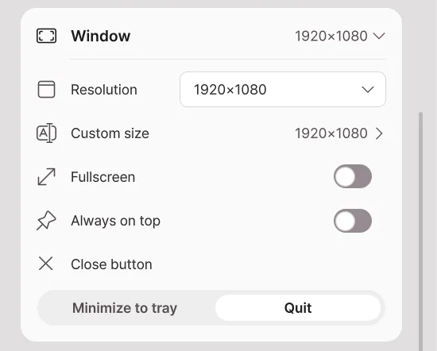
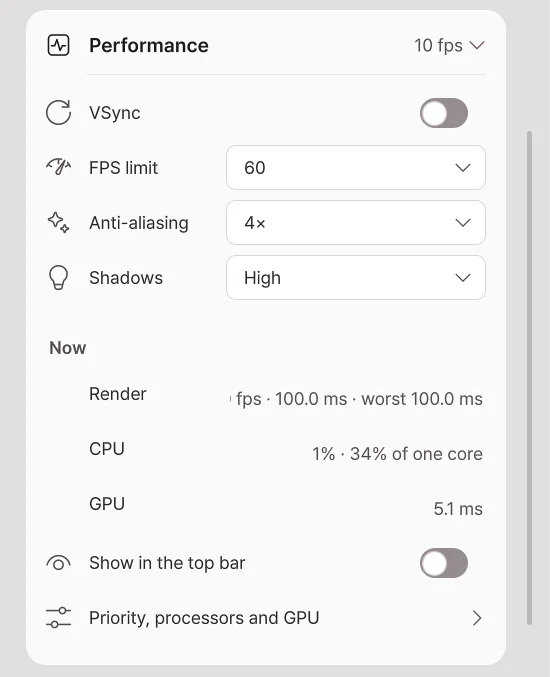
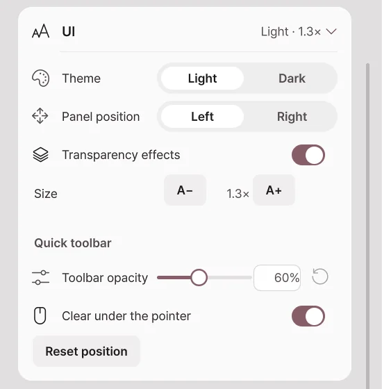
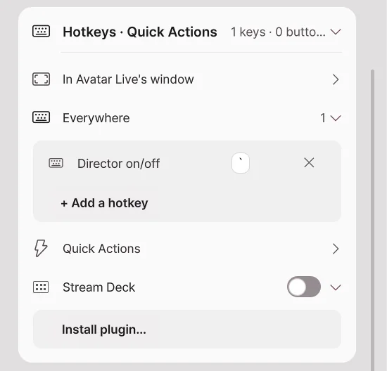
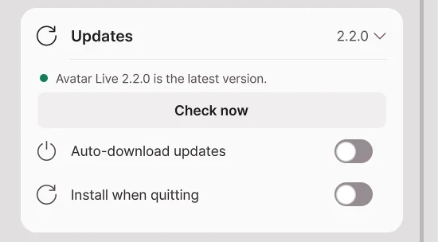
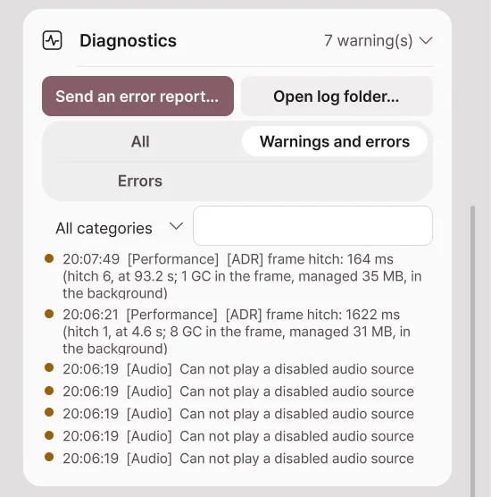
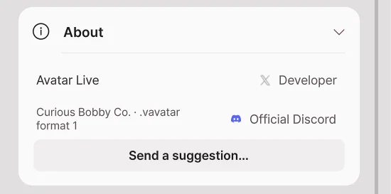

setting
Set window, performance, language, shortcut keys, and program management.
window

| item | What changes |
|---|---|
| window size | This is the size the program takes up on my monitor. |
| full screen | The program fills the screen. |
| always on top | It displays above other programs. |
| Close window | Decide whether to quit or hide in the tray when you press X. |
The output resolution isoutput imageIt is determined separately.
performance

- FPS Limit: Increasing it will increase the smoothness and strain on your PC. Lowering it reduces power usage.
- Image Quality: Higher increases the details and increases the strain on your graphics card.
- Shadows: If you turn it off, it becomes lighter, but shadows in the hair, under the chin, etc. are reduced.
- Post-processing: heavy effectscamera effectsLet's reduce them one by one.
Language and screen size

Select Korean·English·日本語·简体中文 in Language. Change the theme, panel position, and font size in the UI. If the text is small, increase the UI scale.
shortcut key

- Tap Add Shortcut.
- Choose the action you want to perform.
- Specifies the key combination to use.
- Choose whether to apply the expression/toggle while pressing it or keep it until you press it again.
Global shortcuts work even if the game is in front of you. Choose a key that does not overlap with keys frequently used in other apps.
Settings Search
In the magnifying glass at the top, enter the name of the setting you are looking for, such as AFK, Mirror, Spout2, or Language. Clicking on a result will take you to that menu and unfold the card.
update

| Button/Item | What to do |
|---|---|
| check now | Check if there is a new version. |
| Download | Receive the update file. |
| automatic download | When turned on, you'll receive new updates early. |
| Restart and install | Restart the program to apply the update. |
| Install on exit | Apply updates received when you turn off the program. |
It checks once for new versions on startup. Even if you turn off automatic downloads, you may still see update notifications.
Licenses and Diagnostics

- Enter another code: Enter license codes, Pro upgrades and BOOTH order numbers for DLC room packs here. A DLC order does not change your current license.
- Send an error report: Send a problem description and diagnostic data. The actual transfer takes place when the user chooses. While you use broadcast integration, the connection states and recent events go in too. For details, see When broadcast integration does not work.
- Send us improvements: Send us your desired features or complaints.
- Open log folder: Opens the folder containing diagnostic logs.
About

In Settings → About, check the .vavatar format version and the developer links. Use the Official Discord link to get news and ask questions, and Send a suggestion to tell us which features you want.